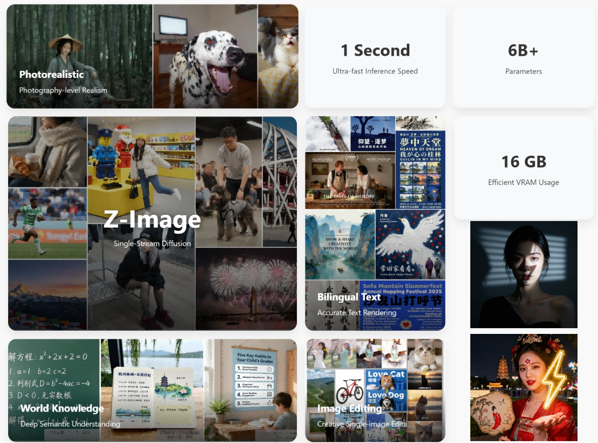

Open-source project (core contributor)SELECTED
Z-Image: An Efficient Image Generation Foundation Model with Single-Stream Diffusion Transformer
Z-Image, an efficient 6-billion-parameter foundation model for image generation. Through systematic optimization, it proves that top-tier performance is achievable without relying on enormous model sizes, delivering strong results in photorealistic generation and bilingual text rendering that are comparable to leading commercial models.